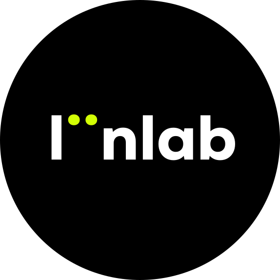
A space for research, art, and play—on my own and with others.
让身上的图案，成为一段声音与动态故事的入口。
把拉花变成一场可以反复尝试的虚拟创作。
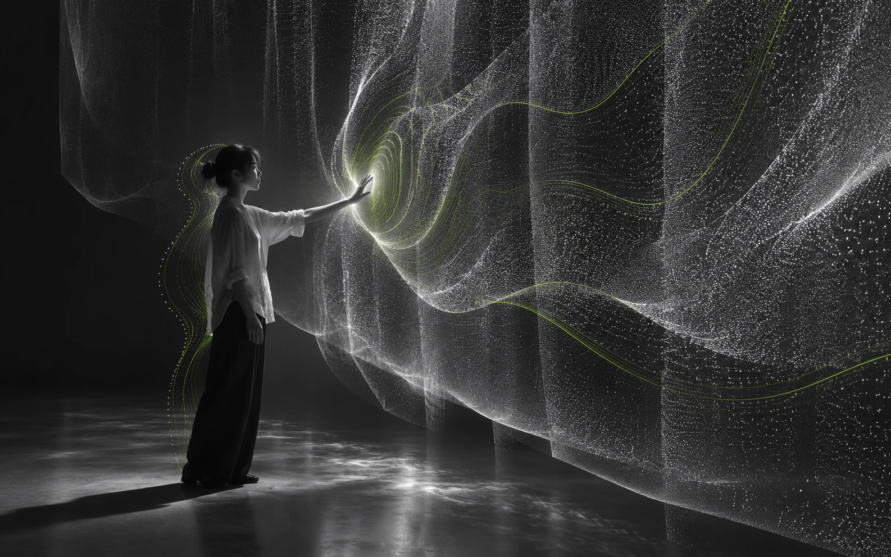
让身体的动作，成为与数字世界交流的语言。
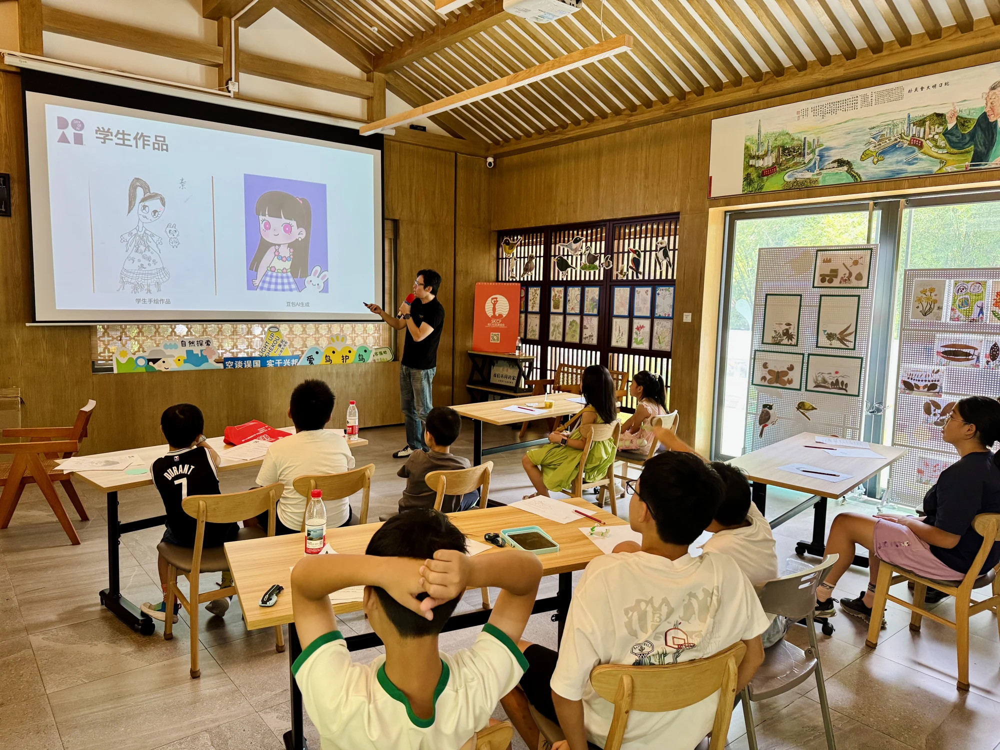
从理解 AI 到亲手创作，让好奇心变成自己的作品。
以独特设计，让日常物件留下不凡印象。
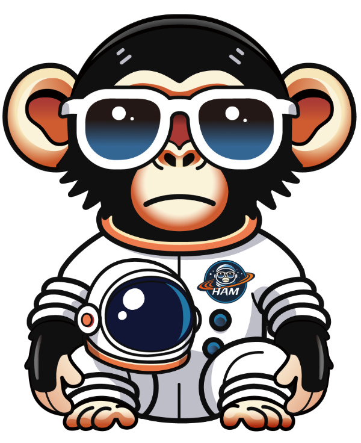
跟着一只好奇的太空猩猩，把火星想象带回日常。
从今天的技术，聊到明天的生活。
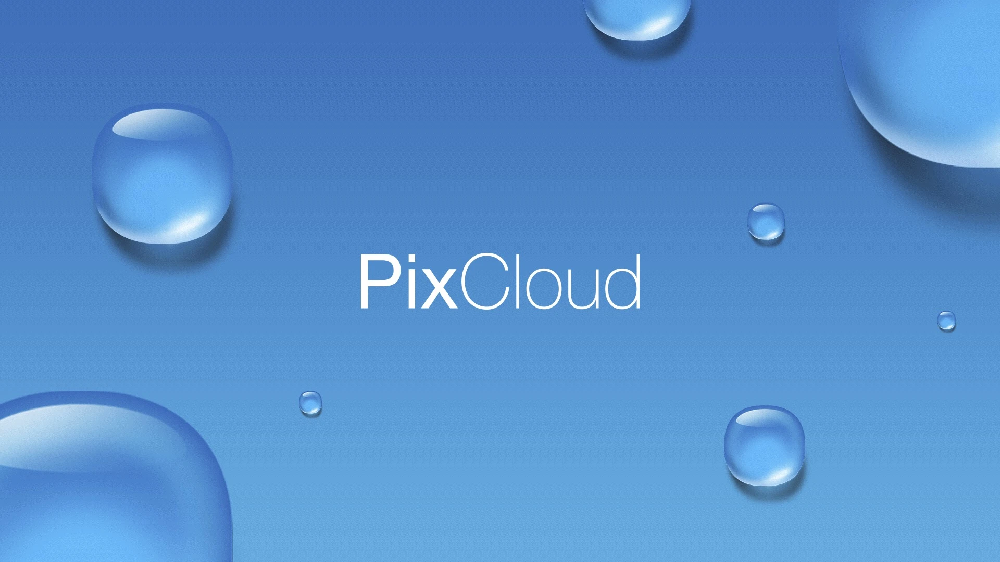
将摄影的碎片重组，让个人创作汇入共同的艺术作品。
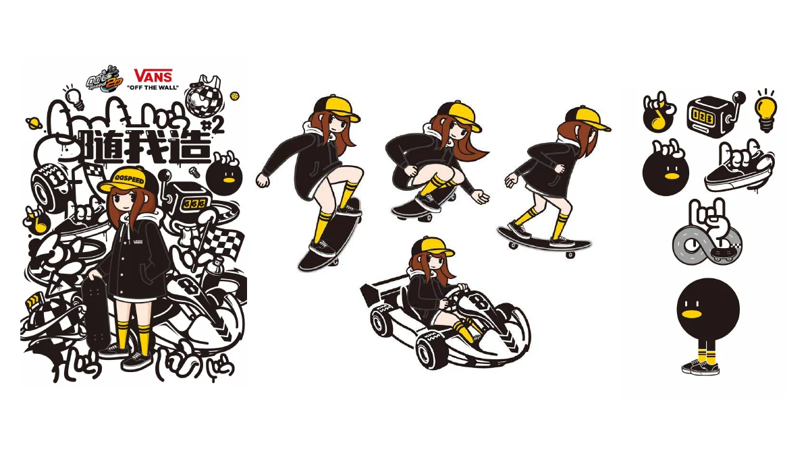
主 KV · 视觉延展
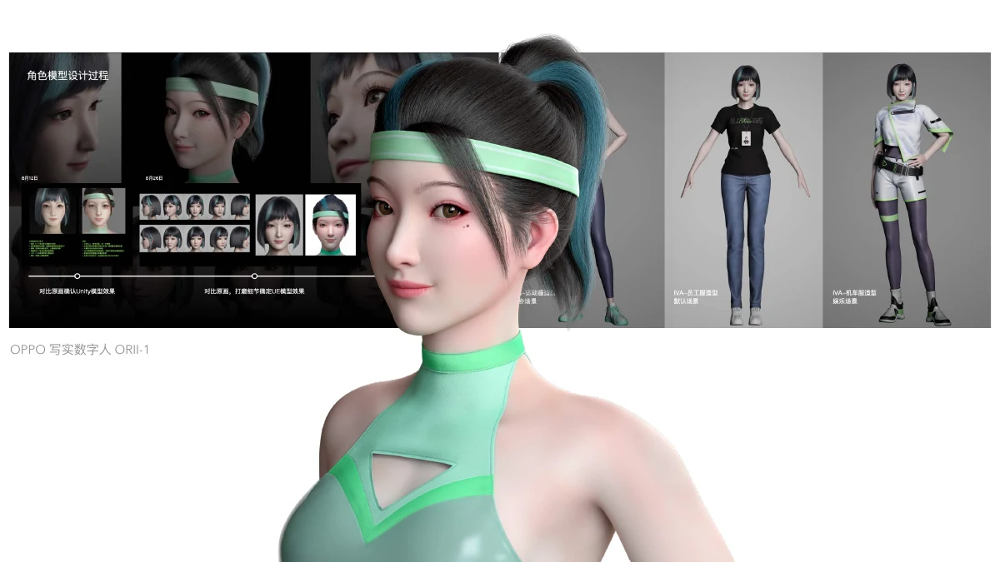
用户体验
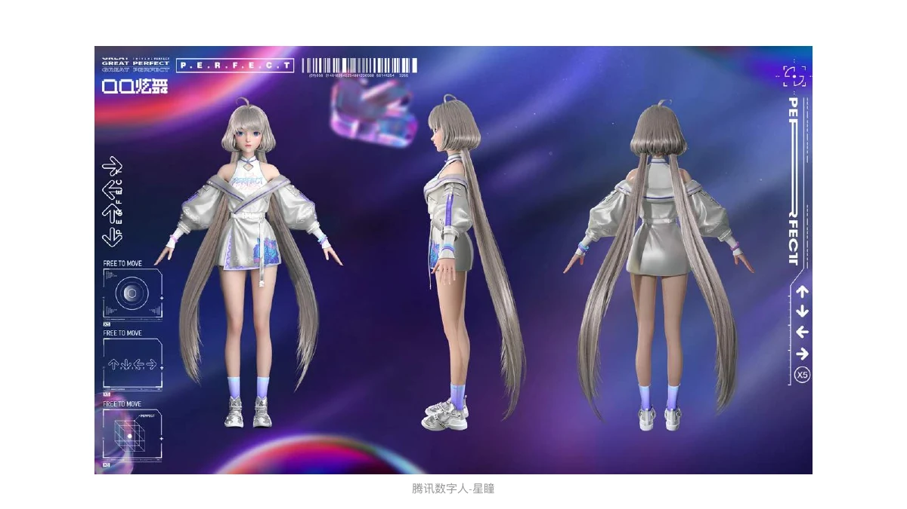
营销
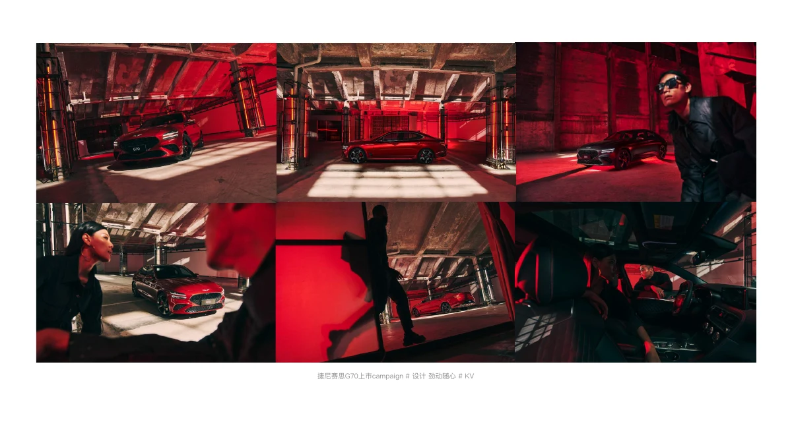
上市 campaign · 设计 劲动随心
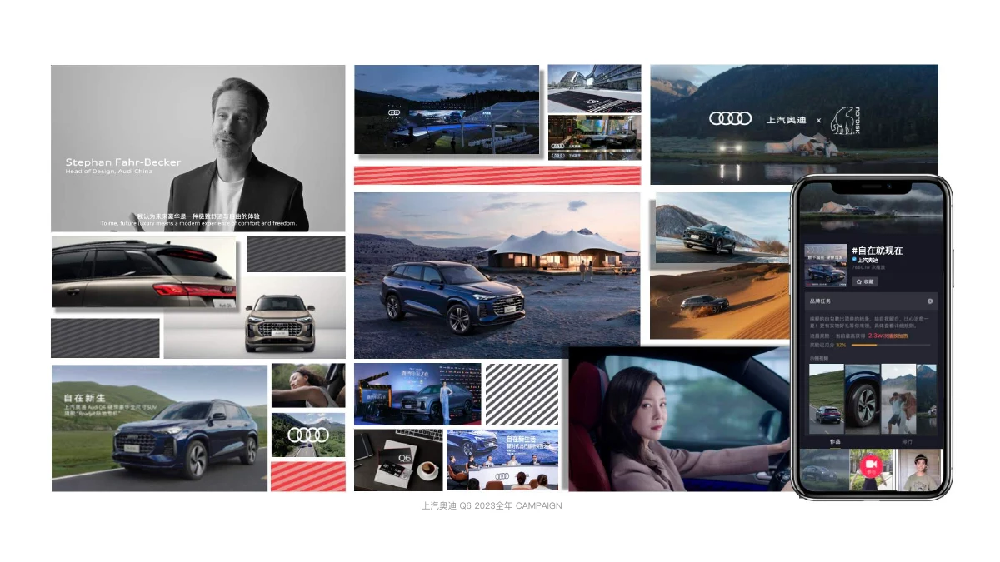
2023 全年 campaign
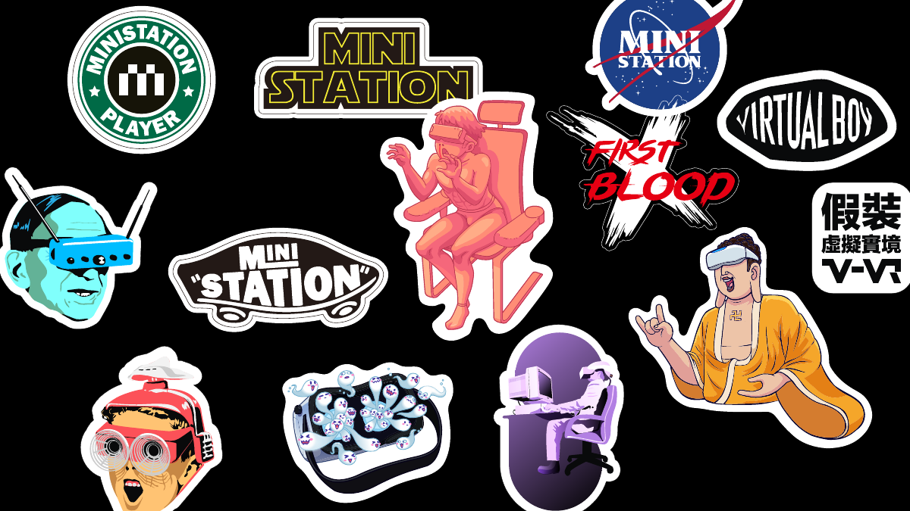
图形 · 插画
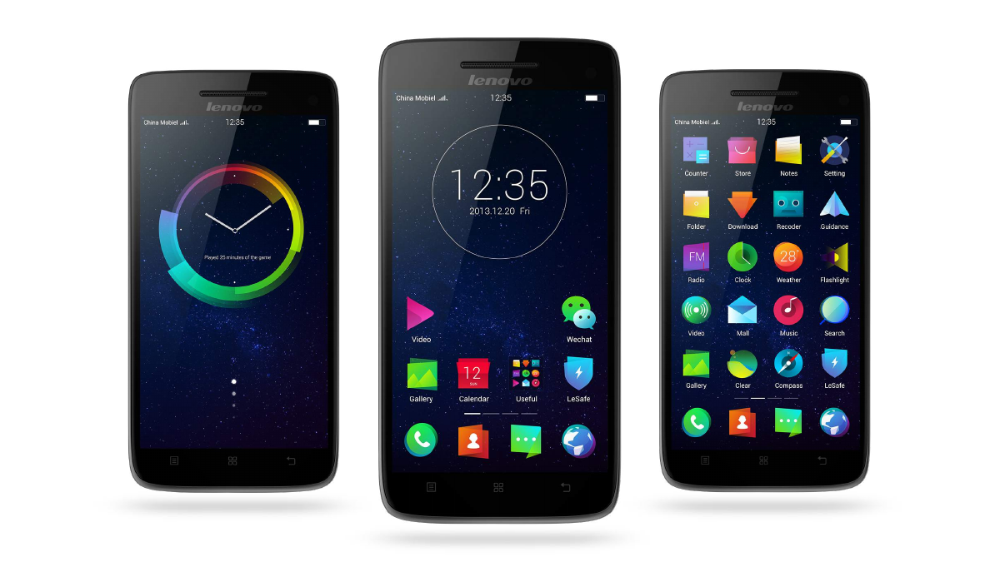
用户体验 · 手机 UI
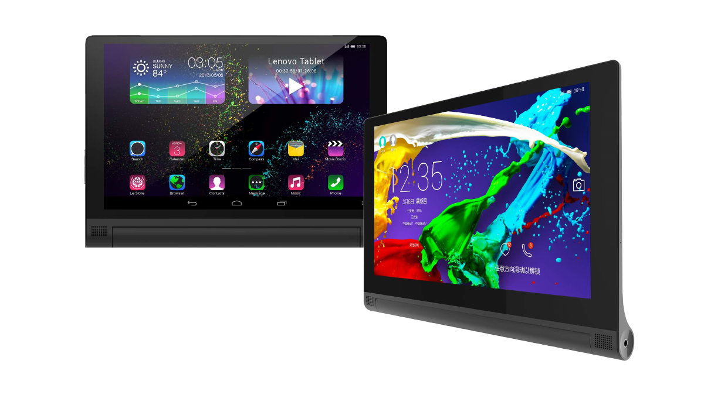
用户体验 · 平板 UI
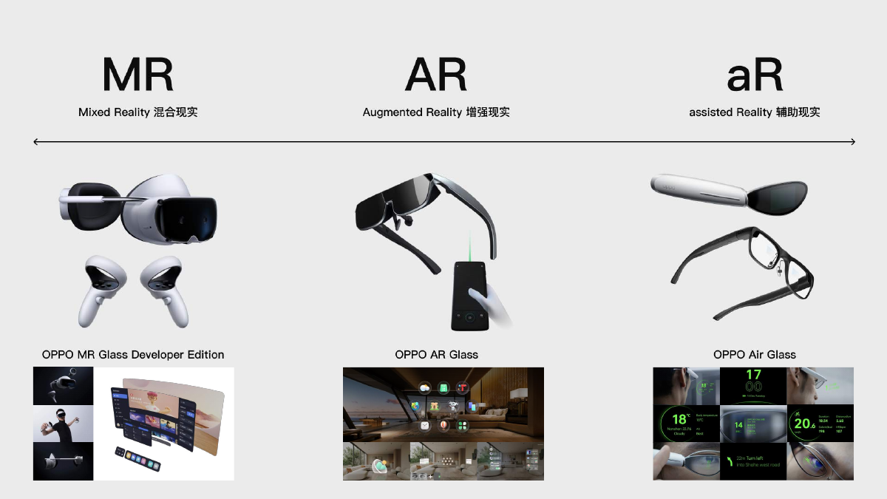
MR · AR · Air Glass
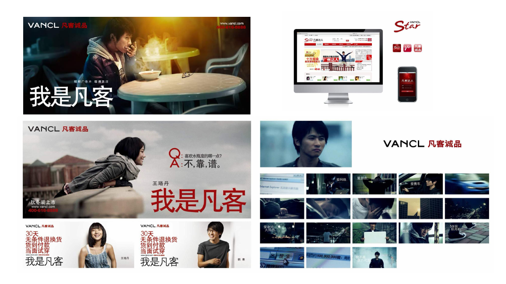
营销 · 视觉传播
 AI 概念示意
AI 概念示意 AI 概念示意
AI 概念示意